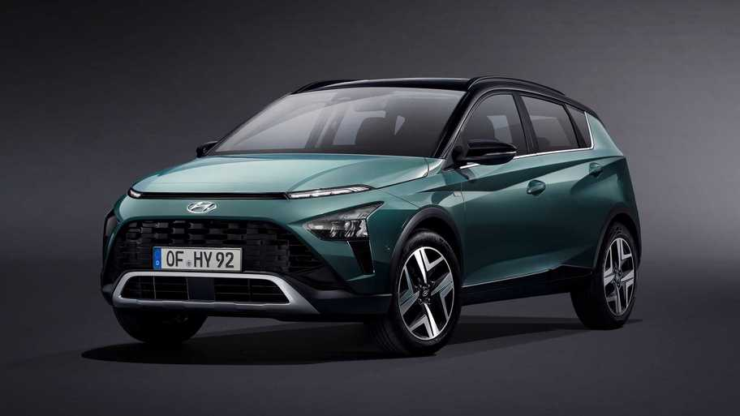
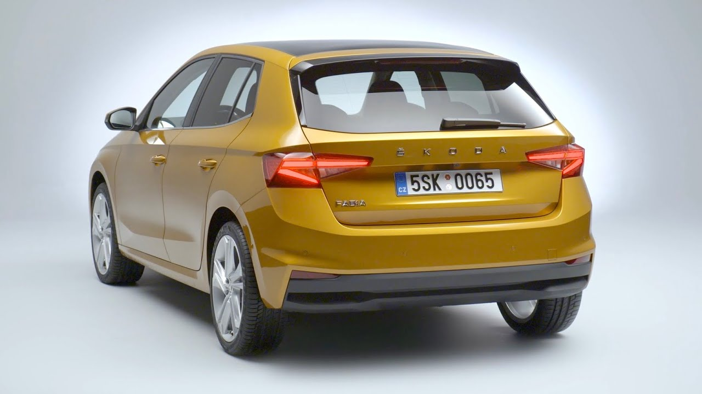
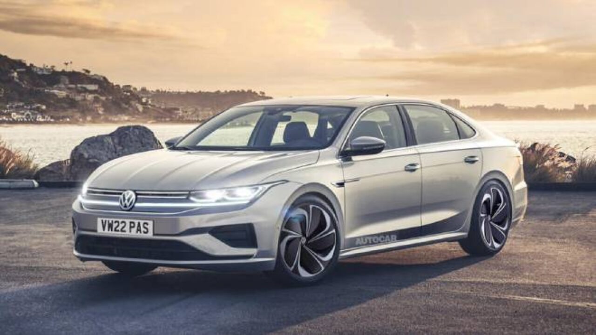

Honda Civic Sedan
TEKNİK ÖZELLİKLER
- Motor : 1.6. Motor Hacmi:1597 cc. Silindir Adedi: 4.
- 0-100 km/s Hızlanma: 10.5 sn. Maksimum Hız: 201 km/s.
- Yakıt Tüketimi. Şehir İçi: 3.5 lt/100 km.
- Honda Civic Sedan Boyutlar. Uzunluk : 4648 mm.
- Sedan Bagaj Hacmi: 519 lt. Yakıt Depo Kapasitesi : 46 lt.

Hyundai Bayon
TEKNİK ÖZELLİKLER
- Model Yılı 2022.
- Silindir Hacmi 1368 cc.
- Beygir Gücü 100 Hp.
- Maksimum Tork 134 Nm.
- 0-100 Km Hızlanma 13.7 sn.
- Maksimum Hız 176 Km/s.
- Tüketim 9.4 lt;Tüketim 6.6 lt

Skoda Fabia
2022 Yeni Kasa Skoda Fabia Teknik Özellikleri
- 1.0 MPI EVO 48 kw
- Motor: 1.0 litre 65 ps 93 nm tork (atmosferik benzinli)
- Şanzıman: 5 ileri manuel
- Performans: 0-100 km/s: 15.5 saniye – Maksimum hız: 172 km/s
- Yakıt Tüketimi: Ortalama / Co2: 5.1 / 116 g/km
- Boyut: Uzunluk / Genişlik / Yükseklik: 4108 mm / 1780 mm / 1459 mm
- Bagaj Hacmi: 380 litre

Volkswagen passat 1.5 Business
TEKNİK ÖZELLİKLER
- Model Yılı 2022.
- Silindir Hacmi 1498 cc.
- Beygir Gücü 150 Hp.
- 0-100 Km Hızlanma 8.7 sn.
- Maksimum Hız 220 Km/s.
- Tüketim 6.6 lt;Tüketim 4.3 lt.
- Karma Yakıt Tüketimi 5.1 lt.